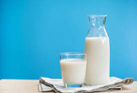
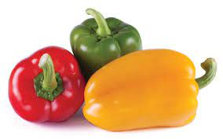
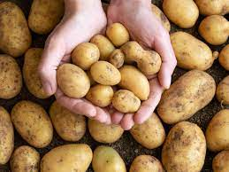
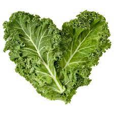

|
 |
| Food is important | food is key for sucess |
food, substance consisting essentially of protein, carbohydrate, fat, and other nutrients used in the body of an organism to sustain growth.
Food is any substance consumed by an organism for nutritional support. Food is usually of plant, animal, or fungal origin and contains essential nutrients.
|
|
|
| Food is important | food is key for sucess |
food, substance consisting essentially of protein, carbohydrate, fat, and other nutrients used in the body of an organism to sustain growth.
Protein Foods include all foods made from seafood; meat, poultry, and eggs; beans, peas, and lentils; and nuts, seeds, and soy products.

|

|
 |
 | tofu | almonds | eggs | milk |
Beans, peas, and lentils are also part of the Vegetable Group.
Some of the most nutritious foods you can eat are oily fish, eggs, avocados, potatoes, and green leafy vegetables.

|
 |  |
|
| tamato | pineappale | bell pepper | lemon |
However, no food provides all the nutrients we need, so it's essential to have a varied diet that includes plenty of fresh ingredients and is as little processed as possible
n nutrition, biology, and chemistry, fat usually means any ester of fatty acids, or a mixture of such compounds, most commonly those that occur in living beings or in food.
 |
butter | ghee | cream | cheese |
Idealized representation of a molecule of a typical triglyceride, the main type of fat.
Carbohydrates, or carbs, are sugar molecules. Along with proteins and fats, carbohydrates are one of three main nutrients found in foods and drinks
|  |

|
potato | brocolli | kidney beans | brown rice |
Your body breaks down carbohydrates into glucose. Glucose, or blood sugar, is the main source of energy for your body's cells, tissues, and organs.
Minerals are those elements on the earth and in foods that our bodies need to develop and function normally.

|
 | avacado | kale | yogurt | carrot |
Those essential for health include calcium, phosphorus, potassium, sodium, chloride, magnesium, iron, zinc, iodine, chromium, copper, fluoride, molybdenum, manganese, and selenium